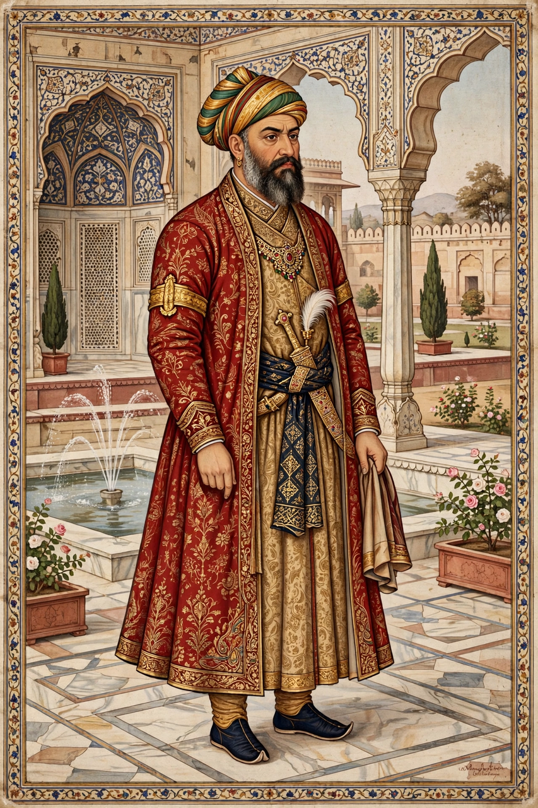

| Bairam Khan | |
|---|---|
 | |
| Born | 18 January 1501 Badakhshan |
| Died | 31 January 1561 (aged 60) Patan, Gujarat |
| Allegiance | Mughal Empire |
| Service | Commander-in-chief; regent and Vakil (chief minister) of Akbar, 1556–1560 |
| Battles | Second Battle of Panipat (1556) |
Muhammad Bairam Khan (18 January 1501 – 31 January 1561) was a Turkoman military commander and statesman who served as regent and chief minister of the Mughal Empire during the minority of the emperor Akbar. His victory at the Second Battle of Panipat in 1556 secured the Mughal restoration in India.
Born in Badakhshan to a Qara Qoyunlu Turkoman family, Bairam Khan entered the service of Babur at sixteen and remained loyal to his son Humayun through the loss of the empire to Sher Shah Suri and the years of exile in Persia. He played a central part in Humayun's reconquest of India in 1555.
When Humayun died in January 1556, the thirteen-year-old Akbar was proclaimed emperor at Kalanaur, with Bairam Khan as his guardian and Vakil. In November 1556 Bairam Khan led the Mughal army against the forces of Hemu at Panipat; Hemu was struck in the eye by an arrow and captured, and the Mughal victory refounded the empire. As regent, Bairam Khan extended Mughal control from Kabul to Jaunpur and Ajmer to the Deccan approaches, but his arrogance, his favouritism toward Shia nobles, and the execution of the imperial favourite Tardi Beg alienated the court.
In 1560 Akbar, encouraged by his foster-mother Maham Anga, dismissed Bairam Khan and ordered him to make the pilgrimage to Mecca. A brief rebellion ended in surrender; Akbar pardoned him, but on the road to Gujarat he was assassinated at Patan on 31 January 1561 by an Afghan seeking revenge for his father's death in battle. His widow Salima Sultan Begum later married Akbar, and his young son, Abdur Rahim, grew up to become the celebrated courtier-poet Khan-i Khanan.